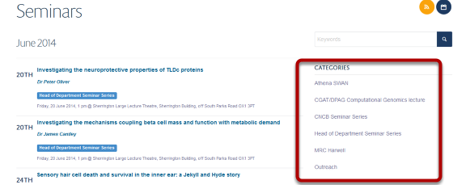

Add a new Category for Events¶
Event Categories offer you a way to organise your events and help visitors to your site find what they are looking for. They display on the right side of the Events listing page:
Taxonomy¶

New Categories are added in to the taxonomy section. Click on the Taxonomy link at the top of the page.

Click on Event.

Add new category¶

- Type your new category on a new line in the Available categories box.
- Click on Save.